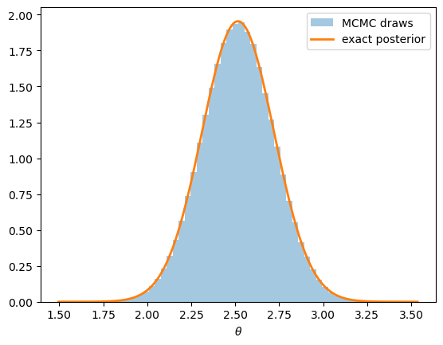
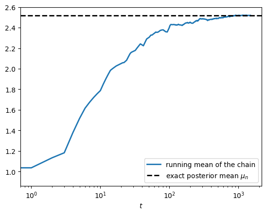
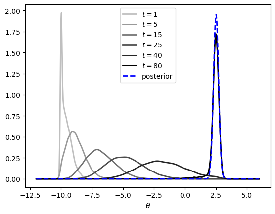
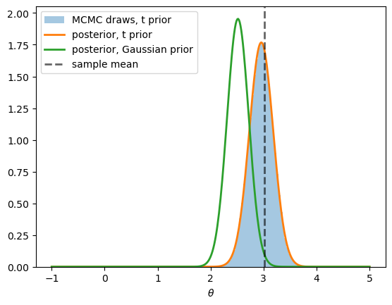
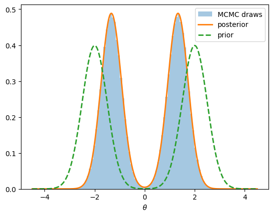
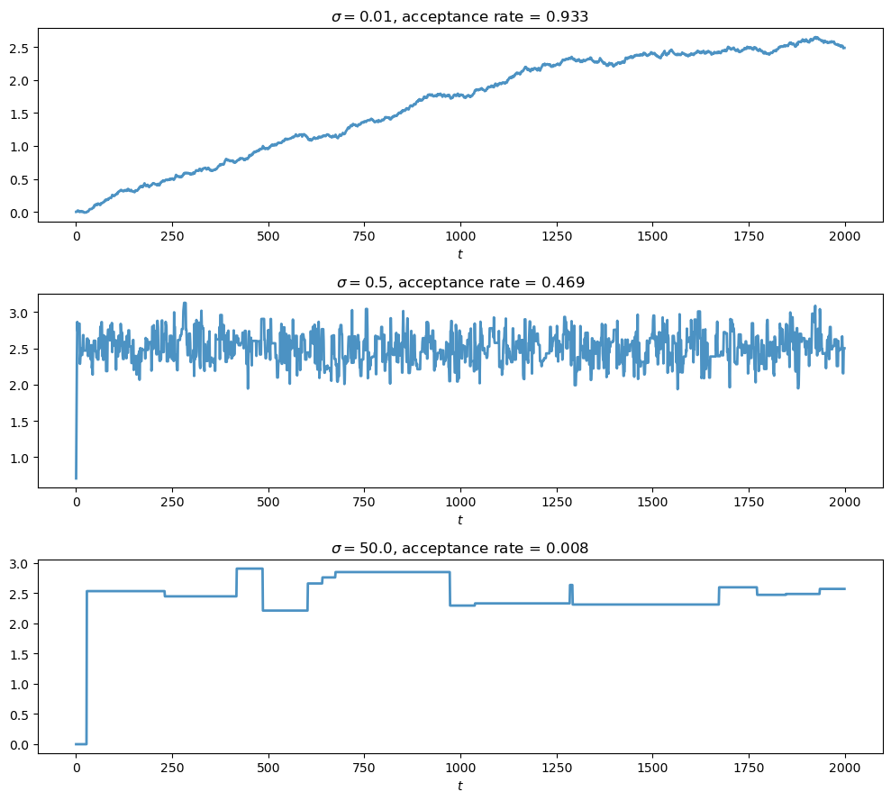
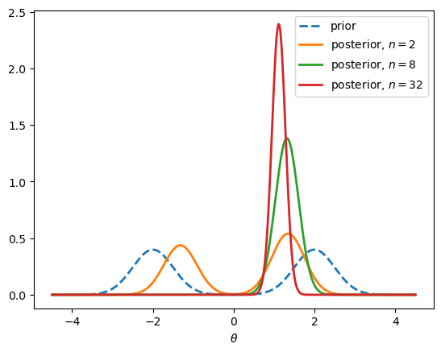

3. Markov Chain Monte Carlo#
This lecture provides a fast-paced introduction to the theory of Markov chain Monte Carlo (MCMC).
MCMC is a general method for sampling from a potentially intractable and high-dimensional distribution.
The basic idea is to set up a Markov chain such that, asymptotically, the distribution of each draw is approximately equal to the target distribution.
Markov chain Monte Carlo lies at the heart of modern Bayesian analysis, and this is our motivation for studying MCMC.
In the case of Bayesian analysis, the target distribution is the posterior.
In this lecture we focus on the Metropolis-Hastings algorithm, which is perhaps the most important foundational algorithm for MCMC in Bayesian environments.
We first state the theory and then run some illustrations using Google JAX.
The lecture also serves as preparation for working with modern MCMC libraries such as NumPyro and BlackJAX, which we will use in later lectures: the implementation below is, in essence, what happens under the hood when such libraries run.
Note that this lecture is intentionally high level.
We freely use advanced probability theory.
The target audience is students with strong math backgrounds and researchers.
In addition to what’s in Anaconda, this lecture will need the following libraries:
!pip install jax
JAX
This lecture uses Google JAX for its numerical examples.
The examples are small enough to run quickly on a CPU, so the default pip install jax is sufficient and no GPU is required.
3.1. Overview#
Let \(\theta \in \Theta \subseteq \mathbb R\) be an unknown parameter and let \(y = (y_1, \ldots, y_n) \in \mathbb R^n\) be observed data.
Bayesian inference centers on the posterior distribution
where \(p(y \mid \theta)\) is the likelihood, \(p(\theta)\) is the prior, and
is the marginal likelihood.
In line with (3.1), we usually use \(\pi\) to refer to the posterior density, and the data vector \(y\) is held fixed.
When the prior and likelihood are conjugate, the integral in (3.2) is available in closed form and the posterior is known analytically.
Outside the conjugate family, the integral and \(\pi\) are typically intractable.
We can nonetheless evaluate the unnormalized posterior
pointwise for any \(\theta\).
Metropolis-Hastings exploits this: it constructs a Markov chain \((\theta_t)_{t \geq 0}\) whose stationary distribution is \(\pi\) using only pointwise evaluations of \(\tilde p(\theta \mid y)\).
In addition to having \(\pi\) as the stationary distribution, the chain will also have the following ergodic property: for \(\pi\)-almost every choice of \(\theta_0\),
with probability one as \(T \to \infty\) for a large class of functions \(f\).
This means that, by varying \(f\), we can compute various features of the distribution \(\pi\).
In the Bayesian setting, we use this convergence to estimate posterior means, variances, and quantiles from the sampled path: with \(f(\theta) = \theta\) we recover the posterior mean, with \(f = \mathbf 1_A\) the posterior probability of \(A\), and so on.
The rest of the lecture flows as follows.
First we define Markov transition kernels, detailed balance, and stationarity (see Markov kernels).
Then we introduce the Metropolis-Hastings kernel and verify that it has \(\pi\) as its stationary distribution (see The Metropolis-Hastings kernel).
Next we explain why the resulting chain delivers samples from \(\pi\) (see Ergodicity of the Metropolis-Hastings kernel).
Finally, we implement the algorithm in JAX and study its behavior in a sequence of experiments (see A numerical example).
3.2. Markov kernels#
In this section we review some foundational aspects of Markov dynamics.
We met closely related ideas in Continuous State Markov Chains, which studies Markov chains whose transition probabilities admit density representations; here we work with general kernels.
3.2.1. Kernels and conditional distributions#
Let \(\Theta \subseteq \mathbb R\) be Borel, let \(\mathcal B\) denote the Borel \(\sigma\)-algebra on \(\Theta\), and let \(\mu\) denote Lebesgue measure on \((\Theta, \mathcal B)\), which we use throughout as the reference measure.
The dynamics of a Markov chain are encoded in a transition kernel.
Definition 3.1 (Markov kernel)
A Markov (or stochastic) kernel on \((\Theta, \mathcal B)\) is a map \(N \colon \Theta \times \mathcal B \to [0, 1]\) such that
for each fixed \(\theta \in \Theta\), the map \(A \mapsto N(\theta, A)\) is a probability measure on \((\Theta, \mathcal B)\); and
for each fixed \(A \in \mathcal B\), the map \(\theta \mapsto N(\theta, A)\) is \(\mathcal B\)-measurable.
The interpretation is that \(N(\theta, A)\) gives the probability that the chain, currently at \(\theta\), moves into the set \(A\) at the next step:
Some kernels can be represented by conditional densities:
Definition 3.2 (Conditional density)
A Markov kernel \(N\) is said to admit a density representation if there exists a conditional density \(n\) such that, for every \(\theta \in \Theta\) and every \(A \in \mathcal B\),
Here
The statement that \(n\) is a conditional density means that \(n\) is measurable and nonnegative on \(\Theta \times \Theta\), and that \(n(\cdot \mid \theta)\) integrates to one for all \(\theta \in \Theta\).
The symbol \(d\theta'\) means integration with respect to Lebesgue measure; sometimes we write this as \(\mu(d\theta')\).
Definition 3.3 (Stationary distribution)
A probability measure \(\pi\) on \((\Theta, \mathcal B)\) is called stationary for the kernel \(N\) if
If \(\theta_t \sim \pi\) and the chain evolves according to \(N\), then (3.3) says \(\theta_{t+1} \sim \pi\) as well: once the chain reaches \(\pi\), it stays in \(\pi\).
Our goal is to construct a kernel for which the posterior (3.1) is stationary.
3.2.2. Detailed balance#
The following sufficient condition for stationarity will be useful in what follows.
Definition 3.4 (Detailed balance)
A Markov kernel \(N\) is said to be reversible with respect to a probability measure \(\pi\), or to satisfy detailed balance with respect to \(\pi\), if the bivariate measure
on \((\Theta \times \Theta, \, \mathcal B \otimes \mathcal B)\) is symmetric under interchange of its coordinates; that is, if
for every bounded measurable \(g \colon \Theta \times \Theta \to \mathbb R\).
The measure \(\Lambda\) is the joint law of a consecutive pair \((\theta_t, \theta_{t+1})\) when \(\theta_t \sim \pi\).
Symmetry of \(\Lambda\) says this pair is exchangeable: the chain looks the same run forwards as backwards in time.
When \(N\) admits a density representation with conditional density \(n(\cdot \mid \theta)\), and \(\pi\) has density \(\pi(\theta)\) with respect to \(\mu\), condition (3.5) reduces to the familiar pointwise detailed balance equation
Indeed, under domination both sides of (3.5) are integrals against the densities \(\pi(\theta) \, n(\theta' \mid \theta)\) and \(\pi(\theta') \, n(\theta \mid \theta')\) respectively, and these agree for all test functions \(g\) whenever (3.6) holds.
For us the significance of detailed balance lies in the following result.
Theorem 3.1 (Detailed balance implies stationarity)
If a Markov kernel \(N\) satisfies detailed balance with respect to a probability measure \(\pi\), then \(\pi\) is stationary for \(N\).
Proof. Let \(N\) satisfy detailed balance with respect to a probability measure \(\pi\).
Fix \(A \in \mathcal B\) and consider the bounded measurable test function \(g(\theta, \theta') = \mathbf 1_A(\theta')\).
From the definitions we have
By detailed balance (3.5) we may swap the coordinates in the integrand, obtaining
Now \(\mathbf 1_A(\theta)\) does not depend on \(\theta'\), so integrating out the second coordinate and using the fact that \(N(\theta, \cdot)\) is a probability measure gives
Chaining (3.7)–(3.8) yields \((\pi N)(A) = \pi(A)\).
As \(A \in \mathcal B\) was arbitrary, this proves that \(\pi\) is stationary for \(N\).
3.2.3. Ergodicity#
We will use a classical ergodicity result described in this section.
Let \(\pi\) be a probability measure on \(\Theta\).
A kernel \(N\) on \(\Theta\) is called \(\pi\)-irreducible if, for every Borel set \(A \subset \Theta\) with \(\pi(A) > 0\) and every \(\theta \in \Theta\), there is some \(t \geq 1\) with \(N^t(\theta, A) > 0\): every region of positive \(\pi\)-mass is eventually reachable from anywhere.
Here \(N^t\) denotes the \(t\)-step kernel, defined inductively by \(N^1 = N\) and
A kernel is called periodic if the state space splits into \(d \geq 2\) disjoint classes that the chain visits in a fixed cyclic rotation, and aperiodic if no such split exists.
We can now state the following famous result.
Theorem 3.2 (Ergodic theorem for Markov chains)
Let \((\theta_t)_{t \geq 0}\) evolve under a kernel \(N\) that is \(\pi\)-irreducible with stationary distribution \(\pi\).
Then \(\pi\) is the unique stationary distribution of \(N\), and, for every \(\pi\)-integrable \(f \colon \Theta \to \mathbb R\) and \(\pi\)-almost every initial \(\theta_0\),
If, in addition, \(N\) is aperiodic, then, for \(\pi\)-almost every initial \(\theta \in \Theta\),
The first part of the theorem is an analogue of the classical law of large numbers, but for the dependent, non-IID draws produced by a Markov chain.
The second part states that, when aperiodicity is added, the distribution of \(\theta_t\) converges to \(\pi\) in total variation.
Proofs of the two parts can be found in chapters 17 and 13, respectively, of [Meyn and Tweedie, 2009].
3.3. The Metropolis-Hastings kernel#
We now build a kernel that satisfies detailed balance with respect to the posterior \(\pi = p(\cdot \mid y)\).
This and Theorem 3.1 then imply that \(\pi\) is stationary for the kernel, suggesting a means of sampling from \(\pi\).
3.3.1. The proposal#
The chain moves in two stages: a candidate state is drawn from a proposal kernel, and is then accepted or rejected.
Throughout we impose the following assumption on the proposal.
Definition 3.5 (Symmetric proposal)
A proposal kernel \(q(\cdot \mid \theta)\), given by a conditional density, is called symmetric if
Example 3.1 (Gaussian random walk)
Take \(\Theta = \mathbb R\).
The canonical example satisfying (3.11) is the Gaussian random walk, where the update step is \(\theta' = \theta + \varepsilon\), with \(\varepsilon\) drawn, independently at each update, from a normal distribution with mean zero and standard deviation \(\sigma\).
Its density \(q(\theta' \mid \theta) = \sigma^{-1} \phi((\theta' - \theta)/\sigma)\), with \(\phi\) the standard normal density, depends on \(\theta, \theta'\) only through \(|\theta' - \theta|\) and so is symmetric.
3.3.2. The acceptance rule#
Given the current state \(\theta\) and a candidate \(\theta'\), the candidate is accepted with probability
The last equality holds because \(\pi = \tilde p(\cdot \mid y) / p(y)\), so the constant \(p(y)\) cancels from the ratio.
Thus \(\alpha\) is computable from the likelihood and prior alone.
If \(\pi(\theta) = 0\), the ratio in (3.12) is not defined, and we adopt the convention \(\alpha(\theta, \theta') := 1\).
3.3.3. The algorithm#
With \(\alpha\) and \(q\) in hand we can state the Metropolis-Hastings algorithm for sampling from the posterior.
The symmetric-proposal version we state, shown in Algorithm 3.1, corresponds to the original Metropolis algorithm.
Algorithm 3.1 (Metropolis-Hastings)
Inputs initial state \(\theta_0 \in \Theta\) with \(\pi(\theta_0) > 0\); proposal density \(q\); sample size \(T\)
Output the draws \(\{\theta_t\}_{t=1}^T\)
For \(t = 1, 2, \ldots, T\):
propose \(\theta' \sim q(\cdot \mid \theta_{t-1})\)
draw \(u \sim \mathrm{Uniform}(0, 1)\)
if \(u \leq \alpha(\theta_{t-1}, \theta')\), set \(\theta_t = \theta'\); otherwise set \(\theta_t = \theta_{t-1}\)
In practice, when testing \(u \leq \alpha(\theta_{t-1}, \theta')\) in Algorithm 3.1, we usually compute the log acceptance ratio
and test \(\log u \leq \log \alpha(\theta_{t-1}, \theta')\).
3.3.4. The transition kernel#
We now construct the Markov kernel induced by Algorithm 3.1.
A move to a new state \(\theta' \neq \theta\) requires both that \(\theta'\) is proposed, with density \(q(\theta' \mid \theta)\), and that it is accepted, with probability \(\alpha(\theta, \theta')\).
Since the proposal draw and the accept/reject draw are independent, the resulting density of landing near \(\theta' \neq \theta\) is
Alternatively, the chain stays at \(\theta\), which happens whenever the proposed candidate is rejected.
(For a continuous proposal the event \(\theta' = \theta\) has probability zero, so staying is due to rejection alone.)
The total holding probability is
Collecting the two cases, the Metropolis-Hastings kernel is the mixed kernel
with absolutely continuous part \(\tau(\cdot \mid \theta)\).
By construction the accepted-move mass \(\int_\Theta q \, \alpha \, d\mu\) and the holding mass \(r(\theta)\) sum to one, so \(P(\theta, \cdot)\) is a probability measure and \(P\) is a genuine Markov kernel.
3.3.5. Stationarity of the posterior#
In this section we show that \(\pi\) is stationary for the Metropolis-Hastings kernel \(P\).
Theorem 3.3 (Stationarity of Metropolis-Hastings)
If the proposal density \(q\) satisfies the symmetry condition (3.11), then, for each given \(y \in \mathbb R^n\), the posterior \(\pi = p(\cdot \mid y)\) is stationary for the Metropolis-Hastings kernel (3.15).
Proof. Let \(P\) be the Metropolis-Hastings kernel, so that
In view of Theorem 3.1, it suffices to show that \(P\) satisfies detailed balance (3.5) with respect to the posterior \(\pi\).
To see that this is so, observe that the joint measure (3.4) splits as
We show each part is symmetric under the swap \((\theta, \theta') \mapsto (\theta', \theta)\).
The diagonal part.
\(\Lambda_{\mathrm{diag}}\) is concentrated on the diagonal \(D = \{(\theta, \theta') : \theta' = \theta\}\), which the swap \((\theta, \theta') \mapsto (\theta', \theta)\) maps onto itself.
For any bounded measurable \(g\), the integrand satisfies \(g(\theta, \theta') = g(\theta', \theta)\) everywhere on \(D\), since \(\theta = \theta'\) there.
As \(\Lambda_{\mathrm{diag}}\) charges only \(D\), it follows that \(\int g \, d\Lambda_{\mathrm{diag}} = \int g(\theta', \theta) \, \Lambda_{\mathrm{diag}}(d\theta, d\theta')\).
Hence \(\Lambda_{\mathrm{diag}}\) is symmetric.
The absolutely continuous part.
It suffices to show that the density of \(\Lambda_{\mathrm{ac}}\) with respect to \(\mu \otimes \mu\) is symmetric — equivalently, that it obeys the detailed balance equation (3.6):
Substituting (3.13) and noting that, by the proposal symmetry (3.11), the factors \(q(\theta' \mid \theta)\) and \(q(\theta \mid \theta')\) on the two sides of (3.16) are equal, it suffices to establish
We verify (3.17) by showing both sides equal \(\min(\pi(\theta), \pi(\theta'))\).
If \(\pi(\theta) > 0\), then
while if \(\pi(\theta) = 0\), then \(\alpha(\theta, \theta') = 1\) by convention, so that \(\pi(\theta) \, \alpha(\theta, \theta') = 0 = \min\big(\pi(\theta), \pi(\theta')\big)\) once more.
In either case \(\pi(\theta) \, \alpha(\theta, \theta') = \min\big(\pi(\theta), \pi(\theta')\big)\), and the right-hand side is symmetric in \((\theta, \theta')\).
Applying the same identity with the roles of \(\theta\) and \(\theta'\) exchanged gives \(\pi(\theta') \, \alpha(\theta', \theta) = \min\big(\pi(\theta'), \pi(\theta)\big)\), which is the same quantity.
This establishes (3.17), hence (3.16), hence the symmetry of \(\Lambda_{\mathrm{ac}}\).
Both parts of \(\Lambda\) are symmetric, so \(\Lambda\) is symmetric and detailed balance (3.5) holds.
Hence \(\pi\) is stationary, as claimed.
3.4. Ergodicity of the Metropolis-Hastings kernel#
Stationarity guarantees that if \(\theta_0 \sim \pi\) then \(\theta_t \sim \pi\) for all \(t\).
For Monte Carlo to be useful we need more: starting from an arbitrary \(\theta_0\), the time average of a function along a single trajectory should converge to its expectation under \(\pi\).
This is the ergodicity property discussed in Ergodicity.
Here we investigate ergodicity in the setting of the Metropolis-Hastings algorithm.
3.4.1. Ergodicity of the chain#
Here is the key result.
(The argument can be extended to more general situations, but the present hypotheses keep the discussion simple.)
Theorem 3.4 (Ergodicity of Metropolis-Hastings)
Let \(\Theta = \mathbb R\), let \(q\) be the Gaussian random walk proposal of Example 3.1, and suppose that \(\pi(\theta) > 0\) for all \(\theta \in \Theta\).
If \((\theta_t)_{t \geq 0}\) is generated by the Metropolis-Hastings algorithm, then the kernel \(P\) is \(\pi\)-irreducible and aperiodic, and the conclusions of Theorem 3.2 hold.
Stationarity of \(\pi\) is already supplied by Theorem 3.3, so, in view of Theorem 3.2, it remains only to show that \(P\) is \(\pi\)-irreducible and aperiodic.
Adopting the hypotheses of Theorem 3.4 throughout the rest of this section, we discuss why these two properties hold.
The discussion is slightly informal but the proof is largely complete.
3.4.2. Why the chain is \(\pi\)-irreducible#
For the random walk sampler this holds in a single step.
Discarding the holding term in (3.15), which only adds mass, we have, for any \(A \in \mathcal B\),
Now fix \(\theta\) and a target set \(A\) with \(\pi(A) > 0\).
The set \(A\) has positive Lebesgue measure because \(\pi(A) > 0\).
On this set the integrand in (3.18) is strictly positive: the Gaussian density satisfies \(q(\theta' \mid \theta) > 0\) everywhere, and \(\alpha(\theta, \theta') = \min\big(1, \pi(\theta')/\pi(\theta)\big) > 0\) because \(\pi(\theta') > 0\).
An integral of a strictly positive function over a set of positive measure is strictly positive, so \(P(\theta, A) > 0\).
Hence every positive-mass set is reached with positive probability in one step, and the chain is \(\pi\)-irreducible.
3.4.3. Why the chain is aperiodic#
A clean sufficient condition for aperiodicity (defined in Ergodicity) is that the chain can remain in place: if \(P(\theta, \{\theta\}) > 0\) on a set of positive \(\pi\)-measure, then, combined with irreducibility, the chain is aperiodic, because a state that can be revisited at two consecutive times cannot belong to a nontrivial cycle.
The Metropolis-Hastings kernel has exactly this feature through its rejection mechanism.
Fix \(\theta \in \Theta\) and consider the set
of candidates that are accepted with probability strictly less than one: on \(L(\theta)\) we have \(\alpha(\theta, \theta') = \pi(\theta')/\pi(\theta) < 1\).
We claim that \(L(\theta)\) has positive Lebesgue measure.
To see this, observe that \(\pi(\theta') \geq \pi(\theta)\) for every \(\theta'\) in the complement \(L(\theta)^c\), so integrating \(\pi\) over \(L(\theta)^c\) yields
whence \(\mu(L(\theta)^c) \leq 1/\pi(\theta) < \infty\).
Thus \(L(\theta)\), being the complement in \(\mathbb R\) of a set of finite Lebesgue measure, has infinite — in particular, positive — Lebesgue measure.
Moreover, \(\alpha(\theta, \theta') = 1\) on \(L(\theta)^c\), since \(\pi(\theta') \geq \pi(\theta)\) there.
Splitting the integral in (3.14) over \(L(\theta)\) and \(L(\theta)^c\) now gives
where the strict inequality holds because \(\alpha < 1\) and \(q(\cdot \mid \theta) > 0\) on \(L(\theta)\), a set of positive \(\mu\)-measure.
By (3.14) this means \(r(\theta) > 0\), and hence, by (3.15), \(P(\theta, \{\theta\}) \geq r(\theta) > 0\).
As \(\theta\) was arbitrary, the chain can remain in place at every state, which rules out any nontrivial period.
3.4.4. Summary#
Theorem 3.3 provides the stationary distribution, and the two arguments above supply \(\pi\)-irreducibility and aperiodicity.
By Theorem 3.2, time averages along the simulated path converge almost surely to posterior expectations, and the distribution of \(\theta_t\) converges to the posterior in total variation.
This is exactly what justifies using the output \(\{\theta_t\}_{t=1}^T\) as a sample from the posterior.
3.5. A numerical example#
We now implement the Metropolis-Hastings algorithm and watch the theory at work.
Our strategy is to start with a fully conjugate model, where the posterior is known in closed form, so that every number the sampler produces can be checked.
Once the numerics are validated, we will change the prior, lose conjugacy, and study how the posterior responds.
Let’s begin with some imports:
import numpy as np
import jax
import jax.numpy as jnp
from jax.scipy import stats as jstats
from jax.scipy.special import logsumexp
from scipy.stats import gaussian_kde
import matplotlib.pyplot as plt
from functools import partial
3.5.1. The model and data#
The data are IID draws from a normal distribution with unknown mean \(\theta\) and known standard deviation \(\sigma_y\):
For the prior we take \(\theta \sim N(\mu_0, \sigma_0^2)\).
It is well known that, under these assumptions, the prior is conjugate.
In particular, the posterior is again normal, with
where \(\bar y\) is the sample mean.
The posterior mean \(\mu_n\) is a precision-weighted average of the prior mean and the sample mean.
Here is a simulated data set when the true but unknown value of \(\theta\) is set to 3.0.
σ_y = 1.0 # observation noise (known)
n = 20 # sample size
θ_true = 3.0 # true parameter generating the data
key = jax.random.key(11)
key, key_data = jax.random.split(key)
y = θ_true + σ_y * jax.random.normal(key_data, (n,))
The prior is centered at zero and fairly tight.
μ_0 = 0.0 # prior mean
σ_0 = 0.5 # prior standard deviation
Let’s have a look at the parameters in the posterior \(\pi\), calculated from the formulas in (3.19).
# Conjugate posterior parameters, from the formulas above
τ_n = 1 / σ_0**2 + n / σ_y**2 # posterior precision
σ_n = jnp.sqrt(1 / τ_n)
μ_n = (μ_0 / σ_0**2 + y.sum() / σ_y**2) / τ_n
print(f"sample mean = {y.mean():.4f}")
print(f"posterior mean μ_n = {μ_n:.4f}")
print(f"posterior std σ_n = {σ_n:.4f}")
sample mean = 3.0187
posterior mean μ_n = 2.5156
posterior std σ_n = 0.2041
The posterior mean lies between the prior mean and the sample mean, pulled toward the latter by the data.
3.5.2. A sampler in JAX#
The sampler needs only the log of the unnormalized posterior \(\log \tilde p(\theta \mid y)\), as promised by (3.12).
We write a small factory that assembles it from a log prior and the data.
def make_log_post(log_prior, y, σ_y):
"Build the log unnormalized posterior from a log prior and data."
def log_post(θ):
log_likelihood = jnp.sum(jstats.norm.logpdf(y, θ, σ_y))
return log_likelihood + log_prior(θ)
return log_post
def log_prior_gauss(θ):
return jstats.norm.logpdf(θ, μ_0, σ_0)
log_post_gauss = make_log_post(log_prior_gauss, y, σ_y)
Next we implement Algorithm 3.1 with the Gaussian random walk proposal of Example 3.1.
The update is written as a function of the current state and a PRNG key, and the chain is generated by jax.lax.scan.
Following the remark after Algorithm 3.1, we work with the log acceptance ratio.
@partial(jax.jit, static_argnames=('log_post', 'num_steps'))
def mh_chain(key, log_post, θ_init, σ_prop, num_steps):
"""
Generate a Metropolis-Hastings chain of length num_steps using a
Gaussian random walk proposal with standard deviation σ_prop.
"""
def step(θ, key):
key_prop, key_accept = jax.random.split(key)
θ_new = θ + σ_prop * jax.random.normal(key_prop)
log_α = jnp.minimum(0.0, log_post(θ_new) - log_post(θ))
accept = jnp.log(jax.random.uniform(key_accept)) <= log_α
θ_next = jnp.where(accept, θ_new, θ)
return θ_next, (θ_next, accept)
keys = jax.random.split(key, num_steps)
_, (path, accepts) = jax.lax.scan(step, θ_init, keys)
return path, accepts
The function mh_chain mirrors Algorithm 3.1 line by line, and on a CPU it is perfectly serviceable.
On an accelerator such as a GPU, however, it is a poor fit: a Markov chain is inherently sequential, so each step involves only a handful of scalar operations and the hardware sits almost entirely idle.
The JAX-idiomatic remedy is not to rewrite the algorithm but to transform it: jax.vmap converts our single-chain sampler into one that runs thousands of independent chains in parallel, which is exactly the kind of workload accelerators are built for.
def mh_ensemble(key, log_post, θ_init, σ_prop, num_chains, num_steps):
"Run num_chains independent MH chains in parallel."
keys = jax.random.split(key, num_chains)
return jax.vmap(
mh_chain, in_axes=(0, None, None, None, None)
)(keys, log_post, θ_init, σ_prop, num_steps)
Running many parallel chains is also how modern probabilistic programming libraries, such as NumPyro and BlackJAX, organize their MCMC computations.
When you ask such a library for a posterior sample, code very much like mh_chain wrapped in vmap is what runs under the hood (albeit with more sophisticated transition kernels).
We will meet these libraries in later lectures; one aim of the present lecture is to build their foundations from first principles.
We initialize every chain at the same point and discard an initial stretch of each — the burn-in — so that the draws we keep are approximately stationary.
(The total variation convergence (3.10) is exactly what justifies this practice: after enough steps, the distribution of \(\theta_t\) is close to \(\pi\) regardless of the initial condition.)
The burn-in is now paid once per chain rather than once in total, but since the chains run in parallel this costs essentially no wall-clock time.
Pooling the post-burn-in draws from all chains then gives us millions of approximate posterior draws.
num_chains = 4_096 # independent chains
T = 1_500 # steps per chain
burn_in = 500 # discarded from the start of each chain
key, key_mh = jax.random.split(key)
paths, accepts = mh_ensemble(key_mh, log_post_gauss,
0.0, 0.5, num_chains, T)
draws = paths[:, burn_in:].ravel()
print(f"total draws kept = {draws.size:,}")
print(f"acceptance rate = {accepts.mean():.3f}")
total draws kept = 4,096,000
acceptance rate = 0.437
3.5.3. Checking the numerics#
If the sampler is correct, the pooled draws should look like a sample from the exact posterior (3.19).
fig, ax = plt.subplots()
grid = jnp.linspace(μ_n - 5 * σ_n, μ_n + 5 * σ_n, 200)
ax.hist(np.asarray(draws), bins=60, density=True, alpha=0.4,
label='MCMC draws')
ax.plot(grid, jstats.norm.pdf(grid, μ_n, σ_n), lw=2,
label='exact posterior')
ax.set_xlabel(r'$\theta$')
ax.legend()
plt.show()

Fig. 3.1 MCMC draws and the exact posterior#
The histogram sits on top of the exact density.
The posterior moments agree to a few decimal places.
print(f"posterior mean: exact = {μ_n:.4f}, MCMC = {draws.mean():.4f}")
print(f"posterior std: exact = {σ_n:.4f}, MCMC = {draws.std():.4f}")
posterior mean: exact = 2.5156, MCMC = 2.5155
posterior std: exact = 0.2041, MCMC = 0.2042
We conclude that the sampler is doing its job.
3.6. Ergodicity in action#
Recall the division of labor in Theorem 3.2: irreducibility delivers the convergence of time averages (3.9), while aperiodicity delivers convergence of the distribution of \(\theta_t\) to \(\pi\) (3.10).
Each conclusion can be visualized separately.
3.6.1. Time averages#
The ergodic property (3.9) with \(f(\theta) = \theta\) says that the running mean of a single trajectory converges to the posterior mean.
Since the theorem concerns time averages along one path, we take a single trajectory — one row of the ensemble.
Note that no burn-in is needed for this statement — the theorem applies to the whole trajectory.
θ_path = paths[0] # a single trajectory
running_mean = jnp.cumsum(θ_path) / jnp.arange(1, len(θ_path) + 1)
fig, ax = plt.subplots()
ax.plot(running_mean, lw=2, label='running mean of the chain')
ax.axhline(μ_n, color='k', lw=2, linestyle='--',
label=r'exact posterior mean $\mu_n$')
ax.set_xscale('log') # the transient is over quickly
ax.set_xlabel(r'$t$')
ax.legend()
plt.show()

Fig. 3.2 Running mean of a single trajectory#
3.6.2. Distributional convergence#
The total variation convergence (3.10) concerns the distribution of \(\theta_t\) at a fixed date \(t\), rather than a time average.
To see it we need many independent copies of the chain — exactly what mh_ensemble provides.
This time all chains are started from the same deliberately terrible initial condition, and no draws are discarded, because the transient is the object of interest.
θ_init_bad = -10.0 # far from the posterior mass
key, key_ens = jax.random.split(key)
ens_paths, _ = mh_ensemble(key_ens, log_post_gauss,
θ_init_bad, 0.5, 10_000, 100)
ens_paths.shape
(10000, 100)
At each date \(t\), the cross-section \(\{\theta_t^i\}_{i=1}^{10000}\) is a sample from the distribution of \(\theta_t\).
We plot kernel density estimates of these cross-sections at a sequence of dates.
fig, ax = plt.subplots()
dates = (1, 5, 15, 25, 40, 80)
greys = [str(g) for g in np.linspace(0.75, 0.0, len(dates))]
grid = np.linspace(-12, 6, 400)
for t, g in zip(dates, greys):
kde = gaussian_kde(np.asarray(ens_paths[:, t]))
ax.plot(grid, kde(grid), color=g, lw=2, label=f'$t = {t}$')
ax.plot(grid, jstats.norm.pdf(grid, μ_n, σ_n), 'b--', lw=2,
label='posterior')
ax.set_xlabel(r'$\theta$')
ax.legend()
plt.show()

Fig. 3.3 Cross-section distributions marching toward the posterior#
The distribution of \(\theta_t\) travels from a point mass at \(-10\) to the posterior, exactly as (3.10) predicts.
Readers of Continuous State Markov Chains will recognize this picture: it is analogous to the density sequence displayed there for the stochastic growth model.
3.7. Losing conjugacy#
The pointwise-evaluation property of Metropolis-Hastings means we can swap in any prior with a computable density — no new sampler is required.
We exploit this to study how the posterior responds when the prior changes.
3.7.1. Ground truth by quadrature#
In one dimension we do not have to take the sampler’s word for anything: the normalizing constant \(p(y)\) is a one-dimensional integral, which we can compute by quadrature on a grid.
def posterior_on_grid(log_post, grid):
"Normalize the unnormalized posterior on a grid by quadrature."
log_vals = jax.vmap(log_post)(grid)
vals = jnp.exp(log_vals - log_vals.max())
return vals / jnp.trapezoid(vals, grid)
As a sanity check, quadrature recovers the conjugate posterior:
grid = jnp.linspace(-2, 6, 800)
quad = posterior_on_grid(log_post_gauss, grid)
exact = jstats.norm.pdf(grid, μ_n, σ_n)
print(f"max abs error = {jnp.max(jnp.abs(quad - exact)):.2e}")
max abs error = 1.18e-05
3.7.2. A Student-t prior#
Our first experiment replaces the Gaussian prior with a Student-t prior that has the same location and scale but heavy tails.
ν = 3 # degrees of freedom
def log_prior_t(θ):
return jstats.t.logpdf(θ, ν, loc=μ_0, scale=σ_0)
log_post_t = make_log_post(log_prior_t, y, σ_y)
Recall that the prior is centered at \(0\) while the data are centered near \(3\) — the prior and the data disagree.
We will see that this heavy-tailed prior produces a rather different posterior (compared to the Gaussian prior).
In essence, the fact that the t density flattens out in its tails means that it exerts less pull on a likelihood centered far away, so the data is more influential.
Let’s check this by sampling.
key, key_t = jax.random.split(key)
paths_t, accepts_t = mh_ensemble(key_t, log_post_t,
0.0, 0.5, num_chains, T)
draws_t = paths_t[:, burn_in:].ravel()
print(f"acceptance rate = {accepts_t.mean():.3f}")
acceptance rate = 0.468
fig, ax = plt.subplots()
grid = jnp.linspace(-1, 5, 400)
ax.hist(np.asarray(draws_t), bins=60, density=True, alpha=0.4,
label='MCMC draws, t prior')
ax.plot(grid, posterior_on_grid(log_post_t, grid), lw=2,
label='posterior, t prior')
ax.plot(grid, jstats.norm.pdf(grid, μ_n, σ_n), lw=2,
label='posterior, Gaussian prior')
ax.axvline(y.mean(), color='k', lw=2, linestyle='--', alpha=0.6,
label='sample mean')
ax.set_xlabel(r'$\theta$')
ax.legend()
plt.show()

Fig. 3.4 Posteriors under Gaussian and Student-t priors#
The figure shows three things.
First, the MCMC histogram again matches the quadrature ground truth, so the sampler remains accurate outside the conjugate family.
Second, the Gaussian-prior posterior compromises, settling noticeably below the sample mean.
Third, the t-prior posterior concedes to the data, concentrating essentially on the sample mean.
This is a classic property of heavy-tailed priors: they represent beliefs that are held firmly near the center but weakly in the tails, so they tend to yield under prior-data conflict.
3.7.3. A bimodal prior#
Our second experiment gives the prior an entirely different shape: a two-component Gaussian mixture
where \(\phi_{\sigma_m}\) is the \(N(0, \sigma_m^2)\) density.
This prior says: \(\theta\) lies in one of two regimes, near \(-2\) or near \(+2\), and we do not know which.
μ_mix = jnp.array([-2.0, 2.0]) # component centers
σ_mix = 0.5 # component standard deviation
def log_prior_mix(θ):
log_comps = jstats.norm.logpdf(θ, μ_mix, σ_mix)
return logsumexp(log_comps) - jnp.log(2)
To keep both regimes in play we use a deliberately small data set: two observations with sample mean zero.
y_mix = jnp.array([0.5, -0.5])
log_post_mix = make_log_post(log_prior_mix, y_mix, σ_y)
When sampling from a bimodal target, the chain must hop between modes through a low-probability valley, so we use a larger proposal standard deviation to make those jumps feasible.
Parallel chains help here too: even if an individual chain crosses between modes only occasionally, the ensemble as a whole populates both modes.
key, key_mix = jax.random.split(key)
paths_mix, accepts_mix = mh_ensemble(key_mix, log_post_mix,
0.0, 2.0, num_chains, T)
draws_mix = paths_mix[:, burn_in:].ravel()
print(f"acceptance rate = {accepts_mix.mean():.3f}")
acceptance rate = 0.358
fig, ax = plt.subplots()
grid = jnp.linspace(-4.5, 4.5, 500)
prior_pdf = jnp.exp(jax.vmap(log_prior_mix)(grid))
ax.hist(np.asarray(draws_mix), bins=80, density=True, alpha=0.4,
label='MCMC draws')
ax.plot(grid, posterior_on_grid(log_post_mix, grid), lw=2,
label='posterior')
ax.plot(grid, prior_pdf, lw=2, linestyle='--', label='prior')
ax.set_xlabel(r'$\theta$')
ax.legend()
plt.show()

Fig. 3.5 Posterior under a bimodal mixture prior#
We see that the posterior inherits the prior’s two-regime structure.
The posterior remains bimodal because two observations cannot decide between the regimes.
Each mode moves inward, from \(\pm 2\) toward the sample mean at zero, because within each regime the data pull the plausible values of \(\theta\) toward the evidence.
The two modes carry equal weight because the data set is symmetric between them — tilt the data and the mode weights tilt too, a case explored in Exercise 3.2 below.
3.8. Exercises#
Exercise 3.1
The proposal standard deviation \(\sigma\) is the one tuning parameter of the random walk sampler, and it matters.
Re-run the conjugate example with \(\sigma \in \{0.01, 0.5, 50\}\), keeping everything else unchanged.
For each value, plot the first 2,000 elements of the chain (a trace plot) and report the acceptance rate.
Explain the pattern you find: why do both very small and very large values of \(\sigma\) produce poor samplers?
Solution
Here is one solution.
σ_props = (0.01, 0.5, 50.0)
fig, axes = plt.subplots(len(σ_props), 1, figsize=(10, 9))
key_ex = jax.random.key(42)
for ax, σ_prop in zip(axes, σ_props):
key_ex, key_run = jax.random.split(key_ex)
path_ex, accepts_ex = mh_chain(key_run, log_post_gauss,
0.0, σ_prop, 2_000)
ax.plot(np.asarray(path_ex), lw=2, alpha=0.8)
ax.set_title(f'$\\sigma = {σ_prop}$, '
f'acceptance rate = {accepts_ex.mean():.3f}')
ax.set_xlabel(r'$t$')
fig.tight_layout()
plt.show()

When \(\sigma\) is very small, nearly every proposal is accepted, but each step is tiny, so the chain explores the posterior extremely slowly and the draws are highly autocorrelated.
When \(\sigma\) is very large, proposals usually land far out in the tails where \(\tilde p\) is negligible, so they are nearly always rejected and the chain stays frozen for long stretches.
Both extremes deliver valid but very inefficient samplers; intermediate values, with acceptance rates roughly in the 20–50% range, explore the posterior much faster.
Exercise 3.2
Return to the bimodal mixture prior and suppose the data actually come from the positive regime: draw \(n\) observations from \(N(1, 1)\).
Compute the posterior by quadrature for \(n \in \{2, 8, 32\}\), using the first \(n\) elements of a single simulated data set so that the samples are nested.
Plot the three posteriors together with the prior, and interpret what you see.
Solution
Here is one solution.
key_ex2 = jax.random.key(8)
y_all = 1.0 + σ_y * jax.random.normal(key_ex2, (32,))
fig, ax = plt.subplots()
grid = jnp.linspace(-4.5, 4.5, 500)
ax.plot(grid, jnp.exp(jax.vmap(log_prior_mix)(grid)),
lw=2, linestyle='--', label='prior')
for n_obs in (2, 8, 32):
log_post_n = make_log_post(log_prior_mix, y_all[:n_obs], σ_y)
ax.plot(grid, posterior_on_grid(log_post_n, grid), lw=2,
label=f'posterior, $n = {n_obs}$')
ax.set_xlabel(r'$\theta$')
ax.legend()
plt.show()

With only a couple of observations, both regimes remain plausible, although the positive regime already carries more weight.
As \(n\) grows, the likelihood sharpens around the sample mean, the negative regime’s posterior weight collapses toward zero, and the surviving mode tightens around the truth.
The prior’s two-regime structure is a belief that the data can and do resolve: in the limit, the posterior concentrates on the regime that generated the data.